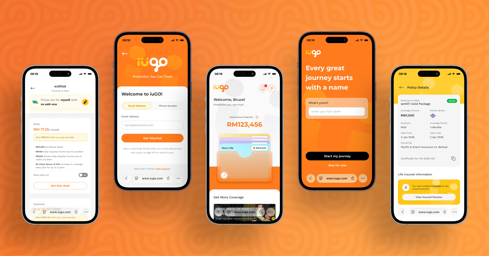
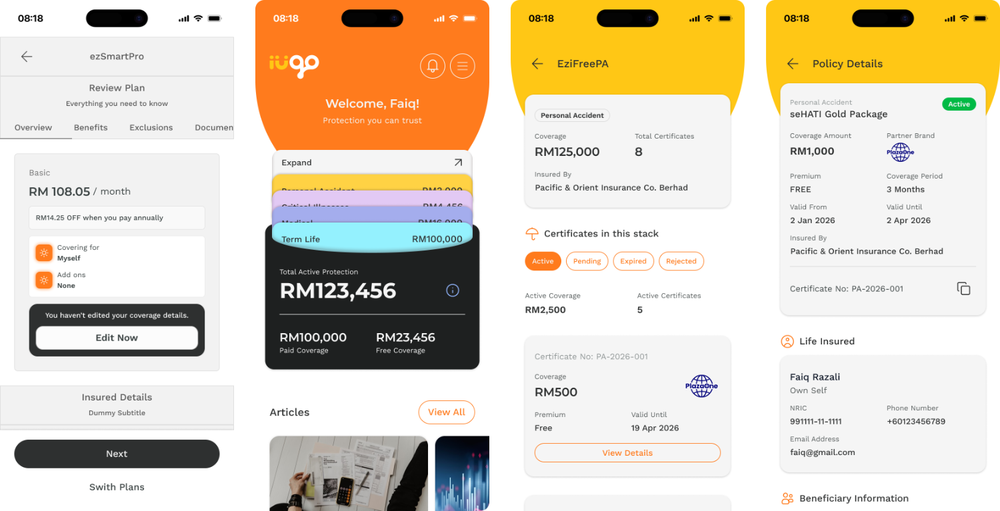

RSG - Simplifying the Insurance Journey
Transforming a complex insurance journey into a clearer, more intuitive experience, from choosing a plan to managing protection.

Project Background
iuGO is a digital insurance platform designed to simplify how users explore, purchase, and manage insurance products online.
The project focused on improving the end-to-end insurance experience, from login and personal information to product selection, quotation, purchase, and policy management. Because insurance involves complex information such as coverage, add-ons, beneficiaries, certificates, and payment plans, the challenge was to present these details in a way that feels simple and easy to understand.
As part of the UI/UX team, I worked on designing and refining key customer journeys and high-fidelity interfaces, while collaborating with the team and stakeholders to translate business requirements into a clearer and more user-friendly experience.
My Role
As a UI/UX Designer, I was responsible for designing and refining key user journeys within the iuGO platform. I worked closely with the BA, PM, and design team to understand requirements, explore solutions, and translate complex insurance processes into clear and intuitive interfaces.
Insurance journeys become complex quickly.
Users need to understand different products, coverage options, add-ons, beneficiaries, payment plans, and policy information, while still being able to navigate the experience easily. During the project, I identified several key UX challenges.
{{ c.body }}
The logic comes before the layout.
The requirements provided the foundation for the user journeys, but some scenarios were more complex than they initially appeared. I worked through them with the BA, PM, developers, and design team to clarify the business logic and identify how different scenarios should behave.
One key area was the difference between stacked and non-stacked policies, as this affected where Life Insured and Beneficiary information should be managed. I mapped the conditions within the purchase and policy journeys so the UI reflected real product logic rather than a standard layout.
The spread, laid out in order.
Once the requirements were clearer, I mapped the main purchase journey to understand how users move from selecting a product to managing their policy, and where the experience changes depending on account status and product type.
The purchase journey stays the same, but the Personal Information step adapts to whether the user is logged in. Existing users reuse their account information; new users provide their details before continuing.
Lo-Fi Design
After mapping the key journeys, I started with low-fidelity wireframes to explore structure, content hierarchy, and user flow before moving into visual details.

These Lo-Fi designs helped me validate the information hierarchy, navigation, and key interactions across the product, from purchasing a plan to managing policies and coverage.
Now We Make It Pretty
With the structure validated and the visual foundation established, I translated the wireframes into high-fidelity designs, clear, consistent, and accessible across every product scenario within iuGO.
{{ h.body }}
The Result
Through user-centered design and close collaboration with the client, BA, PM, and development team, we translated complex insurance requirements into a clearer and more intuitive experience.
{{ r.body }}
Designing for insurance is not making screens look simpler.
It is about making complex information and business logic understandable to users. By combining user-centered design, information architecture, iterative design, and cross-functional collaboration, I turned complex requirements into a more intuitive digital experience.
The result is an insurance experience that feels less complicated, more consistent, and easier for users to navigate.
Available for full-time Product Design roles.
Looking for a team building something that has to hold up, where research, systems and craft are treated as the same job.
Every step reveals something new